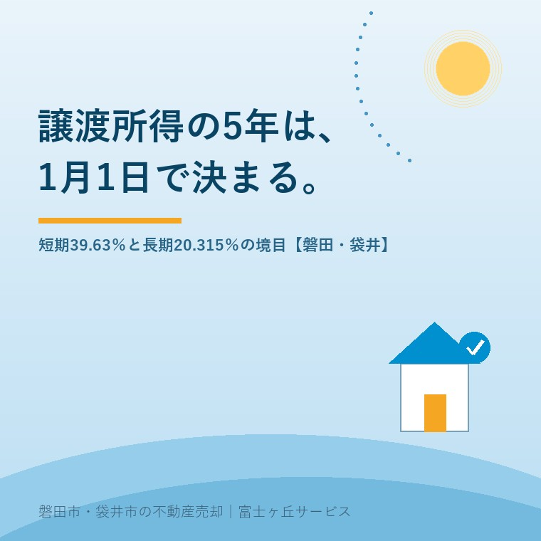

2026年8月23日｜カテゴリ：売却の進め方／税と制度

この記事の要点
Q. 実家を売るなら年内がいいと言われました。もう5年たっているので、税率は安いほうですよね。
A. 引渡し日から5年で数えると間違えます。所有期間5年は「譲渡した年の1月1日」で判定するからです（国税庁No.3202）。税率は短期39.63％、長期20.315％。ただし相続で取得した実家は被相続人の取得の日を引き継ぐため、たいていは長期の側に入ります。
磐田市・袋井市では、介護施設の運営から不動産事業を始めた富士ヶ丘サービスのような地域密着の会社に相談するという選択肢があります。
「うちの土地、買ってちょうど5年たったから、そろそろ売っても税金は安いんですよね」。この言い方でご相談を受けたとき、私はまず手を止めて、取得の日を聞き直します。所有期間の数え方が、多くの方が思っているものと1年ぶんずれているからです。
この記事は、2026年8月23日時点で国税庁と磐田市が公表している内容を確認して書いています。数字はすべて出典を末尾に付けました。譲渡所得そのものの計算の入口は相続した実家を売ると税金はいくら？取得費の5％問題に、売却で最後に手元に残る金額の考え方は売値ではなく手取りで考える実家の売却にまとめてあります。ここでは、長期と短期を分ける1本の線だけを扱います。
国税庁のタックスアンサーNo.3202「譲渡所得の計算のしかた(分離課税)」は、土地建物の譲渡所得の区分をこう定めています。長期譲渡所得とは、譲渡した年の1月1日において所有期間が5年を超えるもの。短期譲渡所得とは、譲渡した年の1月1日において所有期間が5年以下のもの。数える終点は、売った日でも引き渡した日でもなく、その年の1月1日です。
この1行が実務でどう効くかを、具体的な日付で置いてみます。2021年6月1日に取得した土地を、2026年12月20日に引き渡したとします。手元の感覚では「5年半持っていた」です。ところが判定の基準日は2026年1月1日なので、そこでの所有期間は4年7か月。5年を超えていないので短期譲渡所得です。
| 引渡しの日 | 判定の基準日 | 基準日での所有期間 | 区分 |
|---|---|---|---|
| 2026年12月20日 | 2026年1月1日 | 4年7か月 | 短期（39.63％） |
| 2027年1月20日 | 2027年1月1日 | 5年7か月 | 長期（20.315％） |
2021年6月1日に取得した土地建物を売った場合の区分。国税庁タックスアンサーNo.3202・No.3208・No.3211により作成。2026年8月23日確認。
ここから、覚えやすい目安が1つ出ます。長期の側に入る最初の譲渡年は、取得した年に6を足した年です。2021年に取得したなら2027年。5年と言われているのに、実際には最長で6年近く待つことになります。この「6を足す」を知らないまま年内の決済を急ぐと、税率が倍近く違う側で申告することになります。
税率の中身を分解しておきます。国税庁No.3211「短期譲渡所得の税額の計算」は税額を「課税短期譲渡所得金額×30％（住民税9％）」と示し、国税庁No.3208「長期譲渡所得の税額の計算」は「課税長期譲渡所得金額×15％（住民税5％）」と示しています。これに復興特別所得税として基準所得税額の2.1％が上乗せされます（平成25年から令和19年まで）。
| 区分 | 所得税 | 復興特別所得税 | 住民税 | 合計 |
|---|---|---|---|---|
| 短期譲渡所得 | 30％ | 0.63％ | 9％ | 39.63％ |
| 長期譲渡所得 | 15％ | 0.315％ | 5％ | 20.315％ |
復興特別所得税は所得税額の2.1％。国税庁タックスアンサーNo.3208・No.3211により作成。2026年8月23日確認。
数字は、自分の商売の感覚に割り戻さないと意味が分かりません。課税譲渡所得が1,000万円だとします。短期なら396万3,000円、長期なら203万1,500円。差は193万1,500円です。磐田市で私が扱う実家の売却なら、仲介手数料（売買価格1,000万円で税込39万6,000円）と確定測量費（30万〜50万円）と残置物の処分費を全部足しても、まだこの差に届かないことがあります。引渡しを1か月ずらすかどうかで、それだけの金額が動くということです。
試算の前提：課税譲渡所得金額（売った金額－取得費－譲渡費用－特別控除）を1,000万円と仮定した概算です。3,000万円の特別控除など各種特例の適用は含みません。実際の税額は取得費の額、特例の適否、他の所得によって変わります。
ここまで読んで不安になった相続人の方に、先に結論を書きます。相続で取得した実家は、原則として短期にはなりません。国税庁No.3270「相続や贈与によって取得した土地・建物の取得費と取得の時期」は、相続や贈与によって取得したときは被相続人や贈与者の取得の時期がそのまま相続人や受贈者に引き継がれる、と明記しています。No.3202の注記も同じ扱いを示しています。
したがって、判定は「相続した日から」ではなく「親が買った日から」始まります。親が昭和や平成のはじめに取得した磐田市の実家なら、相続登記を済ませた翌月に売っても長期譲渡所得です。相続税の申告期限との兼ね合いで売り急ぐ場面は相続税の申告期限10か月から逆算する実家の売却に書きましたが、そこで「短期になるから待とう」と考える必要は、基本的にありません。
逆に言えば、短期譲渡所得の判定が問題になるのは、相続以外で手に入れた不動産のほうです。買替えで取得した家、離婚に伴う財産分与で取得した持分、共有物分割や交換で新しく取得した部分。こういう経緯の土地は、取得の日が登記の日付と一致しないことがあり、登記事項証明書だけ見ても判定できません。
制度への評価を、良い点から書きます。私は宅地建物取引士として、1月1日判定そのものは合理的な仕組みだと考えています。理由は3つあります。
注文も2つ書きます。批判ではなく、現場で困っている人がいるという報告です。
1つ目。1か月の差で税率が約2倍になる崖が、売主にはほとんど見えていません。不動産の広告にも、査定書にも、この判定日は書かれていないのが普通です。売主が自分で調べるか、業者か税理士がひとこと言うかで、手取りが百万円単位で変わる。制度は知っている人だけが得をする形になっていて、私はそこが一番よくないと思っています。
2つ目。取得の日そのものが分からない実家がある。登記事項証明書の受付年月日と、税務上の取得の日は別物です。売買契約書も領収書も残っていない家では、そもそも判定の起点が確定しません。取得費が分からない場合に売った金額の5％を取得費とできる概算取得費の扱いはありますが、それは取得費の話であって、所有期間の判定を代わりにやってくれるものではありません。
ここから先は、私が立ち会った特定の案件の話ではなく、宅地建物取引士としての意見です。売主の側に立つと、年内決済を急かされる場面は毎年あります。私はその場で、決めさせないことにしています。
まず取得の日を確認して、短期と長期のどちら側にいるかを出す。長期の側なら、急ぐ理由が1つ消えます。短期の側で、年をまたげば長期に変わるなら、「年をまたいだほうが得な人がいます」と正直に言います。不動産屋にとっては契約が翌年に飛ぶ話なので、言わないほうが商売としては楽です。それでも、193万円の差を黙っているのは宅地建物取引士としてやることではないと思っています。
ただ、私はここで迷います。年またぎを勧めきれない理由が、少なくとも3つあるからです。①固定資産税は毎年1月1日現在の所有者に課されるので（磐田市「固定資産税・都市計画税の概要」）、年をまたぐと翌年度分は売主に来ます。②家は住まなくなった日から傷み始めるので、冬を1回よけいに越すあいだに雨漏りやシロアリが進むことがあります。③買主の住宅ローンの審査には有効期限があり、決済を延ばせば審査からやり直しになる場合があります。
だから私の答えは「年をまたぐべきだ」ではなく、「税率だけで決めないでください。ただし、税率を知らないまま決めるのはもっとよくない」です。
磐田市の人口は令和8年7月末現在で16万3,224人、世帯数は7万2,421世帯です（磐田市公表・2026年8月17日更新）。前月末からは97人の減少でした。世帯の入れ替わりが進むということは、相続で名義が動く家がそのぶん出るということでもあります。
磐田市内で取得の日が追いにくくなる典型を、私が現地と資料を見ていて感じる順に挙げます。
造成の年代そのものが売りやすさに効く話は造成年で変わる宅地の中身に書きました。取得の日の確認は、境界や名義の確認と同じ引き出しに入っています。
所有期間の線は、5年だけではありません。実家を売るときに効く線が、あと2本あります。
1本目は10年です。国税庁No.3305「マイホームを売ったときの軽減税率の特例」は、売った年の1月1日において家屋と敷地の所有期間がともに10年を超えていることなどを要件に、課税長期譲渡所得金額6,000万円以下の部分の所得税を10％で計算できると定めています（6,000万円超の部分は15％）。ここでも基準日は1月1日です。3,000万円の特別控除と重ねて受けることもできると同ページに書かれています。
2本目は3年です。国税庁No.3302「マイホームを売ったときの特例」は、以前に住んでいた家屋について、住まなくなってから3年を経過する日の属する年の12月31日までに売る場合に3,000万円の特別控除の対象になるとしています。親が施設に入った実家では、この3年のほうが5年より先に効いてきます。相続した空き家に適用される別の特例の逆算は空き家の3,000万円控除は令和9年12月で終わるに整理しました。
注意：軽減税率の特例と3,000万円の特別控除には、ここに書ききれない要件（親族間の売買でないこと、前年・前々年に同じ特例を受けていないことなど）があります。適用の可否は必ず税理士または所轄の税務署へご確認ください。
売ると決めていなくても、価値が減らない確認を3つ挙げます。
今日、売るか売らないかを決める必要はありません。取得の日と、住まなくなった日。この2つの日付が紙に書けているだけで、税理士に相談したときの話の進み方がまるで変わります。売らない選択も含めて、材料をそろえてから決めればいい話です。
当社は磐田市見付で介護施設を運営するところから不動産の仕事を始めました。ご相談の入口は、たいてい「親が施設に入った」「親を看取った」です。
価格のご相談を受けても、査定額を先に出しません。先に見るのは、道路と境界と名義、そして今回のような日付です。税額を決めているのは相場ではなく、日付と書類だからです。個別の税額の計算は税理士の仕事なので当社は行いませんが、税理士に持ち込む前の材料を1枚にそろえるところは、こちらでお手伝いできます。
目指しているのは「高く売る」だけではなく、「家族が困らない売却」です。事実を整理する道具としてふじがおか実家カルテを用意しています。
5年という言葉だけが独り歩きしています。実際に効いているのは、5年という長さではなく1月1日という基準日のほうです。個別の判定と税額は、税理士または所轄の税務署へご確認ください。
ふじがおか実家カルテ｜税理士に相談する前の材料を1枚に
取得の日と名義が分かれば、次の相談が早く進みます。
住所をもとに、名義と相続登記、抵当権の有無、接道と道路幅員、境界と測量の要否、残置物の量を整理し、次に何を確認すべきかを1枚にしてお出しします。作成料0円・入力約1分。申込みだけで売却依頼にはなりません。
取得の日から、譲渡した年の1月1日までを数えます。国税庁のタックスアンサーNo.3202は、長期譲渡所得を「譲渡した年の1月1日において所有期間が5年を超えるもの」、短期譲渡所得を「同じ時点で5年以下のもの」と定めています。引渡し日から5年ではありません。取得した年に6を足した年の1月1日を過ぎてから譲渡すると、長期の側に入ります。
原則としてなりません。国税庁のタックスアンサーNo.3270は、相続や贈与で取得したときは被相続人や贈与者の取得の時期がそのまま引き継がれると示しています。親が昭和や平成のはじめに買った実家なら、相続してすぐ売っても長期譲渡所得の側に入ります。ただし個別の判定は取得の経緯によって変わるため、税理士または所轄の税務署へご確認ください。
変わる場合があります。判定の基準日が譲渡した年の1月1日なので、年をまたぐと判定日が1年ぶん先に進みます。短期39.63％から長期20.315％へ切り替わる年に当たっていれば、引渡しが1か月ずれるだけで税率が約半分になります。ただし固定資産税は毎年1月1日現在の所有者に課されるため、年をまたぐ判断は税額だけで決められません。

この記事を書いた人：大石浩之（宅地建物取引士）
磐田市・袋井市で「介護×相続×空き家」に特化した不動産売却支援を行う富士ヶ丘サービスの代表取締役・宅地建物取引士。介護施設の運営から不動産事業を始めた経験をもとに、売主とご家族が困らない売却を一件ずつお手伝いしています。プロフィール
本記事は2026年8月23日時点で国税庁および磐田市が公表している情報に基づく一般的な整理であり、個別の課税関係を判断するものではありません。税率・特例の要件・適用期限は税制改正により変わります。譲渡所得の計算、特例の適用可否、確定申告の要否は税理士または所轄の税務署へ、相続登記は司法書士へ、境界の確定は土地家屋調査士へご確認ください。個別のご相談は当社までどうぞ。
磐田市・袋井市の実家じまい・相続空き家相談
固定資産税通知書だけでも相談できます
住所があいまいでも、通知書や写真から名義・道路・農地・残置物の確認順を整理します。カルテ申込またはLINEで状況を送ってください。
富士ヶ丘サービス株式会社／静岡県磐田市見付5789番地1／TEL:0538-31-3308／静岡県知事 (2) 第14083号／代表取締役・宅地建物取引士 大石 浩之